Conceptos
Grid Container
-
El nombre Grid proviene de la "grilla", la cuales es: un sistea organisador del espacio grafico que permite la estructuración, el orden y la disposición de distintos elementos que componen una pieza. Al basrse en este formato los elementos grid poreen una gran bariedad de caracteriticas unicas.
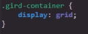La estructura de un grid container esta compuesta por dibersas columnas y filas de celdas, similar a una tabla
Ejemplo
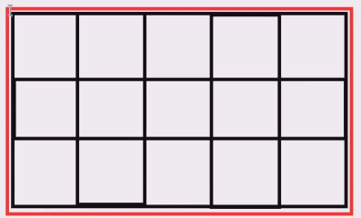Nota: Al igual que flexbox los contenedores grid se comportan como elementos de bloque para los elementos externos.
Grid Cell
-
Las Grid celdas se tratan de todos los recuadros que seccionan en contenedor, en un elemento Grid pueden ser definido el número de filas y de columnas segun sea necesario, por defecto la propiedad display: grid; genera una unica columna y no genera ninguna fila, como es obvio esto puede ser modificado a conbeniencia del diseño.
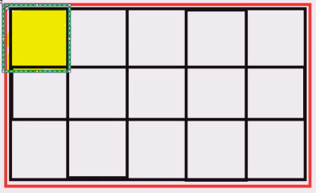 Grid Item
-
Al igual que el FlexBoxtodos los elementos hijos que se encuentran dentro del contenedor son llamados items, es decir un grid item es todo elemento que se asigne en el interior del contenedor grid, por lo tanto la cantidad maxima o minima de grid item es definida por el desarrollador.
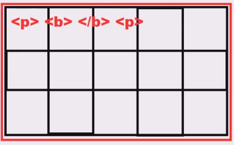Nota: Al igual que en flexBox en grid los "items" son limitados unicamete a los elementos hijos directos, por lo tanto un elemento que se encuentre dentro de un item ya no es considerado como uno.
Grid Tracks
-
Se tratan de conjuntos de grid cell, y se dibiden en dos grupos:
-
Filas
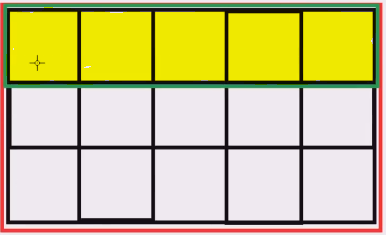 -
Columnas
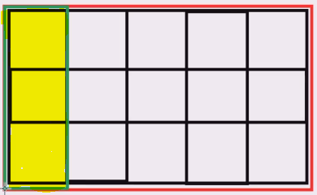
-
Grid Area
-
las grid area son conjuntos de celdas consecutivas que el desarrollador puede definir, ya que estas no estan estructuradas, por lo tanto cualquier conjunto de celdas consecutivas puede ser definido com un grid area, esto incluye a uno o más grid tracks
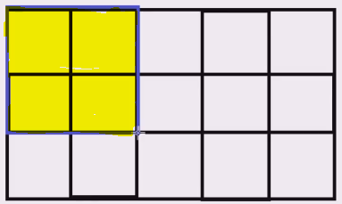Nota: tambien se podria definir una sola celda como un area, pero esto carece de sentido, lo ideal es que un grid area posea almenos dos celdas.
Nota: Las grid areas tienen que ser celdas consecutivas vertical o horizontalmente, no pueden ser en diagonal ni en vartical y horizontal en la misma area.
Grid Line
-
Se refiere a las lineas dibisoras de las columnas y las celdas, por lo tanto se dibiden en dos grupos
Row line: Lineas dibisoras de las filas
Column line: Lineas dibisoras de la columnas
A su vez estas se empiezan a enumerar desde la linea borde izquierda para las columnas y desde la linea borde superior para las filas, de la siguite manera:
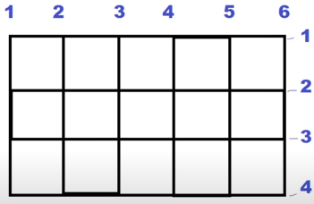
Propiedades
Propiedades a aplicar en el Contenedor:
Gird Template
-
Esta primera porpiedad cuenta con dos variaciones gird-template-rows y grid-template-columns, en ambos casos la función es la misma, definir el número de filas y de columnas respectivamente,de la siguente forma: s
Codigo
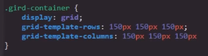Resultado
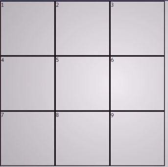De este modo es como se asigna numero de filas y columnas que poseera el contenedor a la vez que se define las dimenciones de estas, de hecho para definir las dimenciones de las columnas y filas se puede aplicar cualquiera de las dibersas unidades de medida CSS.
Medida "fr"
Los elementos grid cuentan con un valor especial abrebiado como "fr", y su efecto es similar al de la propiedad flex-grow, en la cual se define que todo el espacio sobrante se asigne al elemento en el que esta se aplique, del mismo modo al utilizar este valor para definir las dimenciones de alguna columna o fila esta dispondra del espacio disponible o se reducira segun sea necesario.
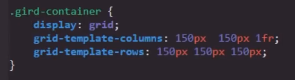Nota: la medida "fr" se puede aplicar a todas las columnas y filas si es necesario
Valor Repeat
Se trata de una función que se puede emplear a la hora de definir el valor de estas porpiedades, su funión es la de simplificar la declaración de las columnas y filas al definirlas una unica vez en lugar de repetir las pautas numerosas veces.
Su sintaxis constan de la palabra clave repeat y dentro de parentesis el numero de repeticiones a realizar seguido de las pautas de las filas o de las columnas, como se puede ver en el siguite ejemplo:
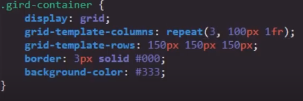De esta forma se logra que la función ejecute las pautas el numero de beces designado, en este caso: que se cree una columna de de 100px seguida de una de 1fr tres veces.
Nota: Esta función es muy util en aquellos casos en los que es necesario crear numerosas filas o columnas.
Grid-gap
-
Esta segunda propiedad tambien posee dos bariantes grid-row-gap y grid-column-gap, tal como su nombre lo indica la diferencia entre ambas es que una aplica su efecto a las columnas y otra a las filas, fura de esto el efecto es el mismo, el efecto de esta propiedad es aplicar un tipo de margen entre las celdas del contenedor de la siguite forma:
Codigo
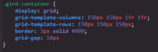Resultado
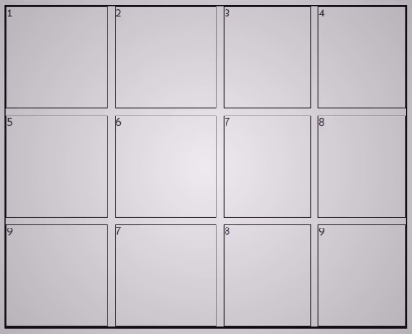Tal como se puede ver en el ejemplo en este codigo se utilizo la propiedad de abrebiatura grid-gap, la cual simplemete generaliza el efeco tanto para las columnas como para las filas, sin embargo se puede utilizar las propiedades grid-row-gap y grid-column-gap de la misma forma, claro que cada una se limita a plicar los margenes a las filas y a las columnas respectibamente.
Nota: Tal como se puede apreciar en el ejmplo esta propiedad no distancia las celdas de los bordes del contenedor, su efecto unicamte se aplica entre celdas.
Grid-column y Grid-row
-
Se tratan de dos propiedades con efectos muy similares entre si llamadas grid-column y grid-row, la función de ambas es definir el espacio que ocupara una celda en en la grilla, para lo cual esta propiedades se basan en las grid line, es decir se basan en las diferentes lineas que se conforman la grilla, tal como se puede ver en este ejemplo, por lo tanto el efecto de cada propiedad es:
-
Grid-column: Define en cuales lineas de columna (lineas verticales) empieza y termina la celda en cuestión, por lo tanto esta propiedad modifica las dimeciones horizontales de la celda.
-
Grid-row: Define en cuales lineas de fila (lineas horizontales) empieza y termina la celda en cuestión, por lo tanto esta propiedad modifica las dimeciones verticales de la celda.
Por lo tanto se podria decir que estas propiedades modifican la cantidad de casillas que ocupara la celda selecionada, como en el siguite ejemplo:
Codigo
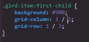Resultado
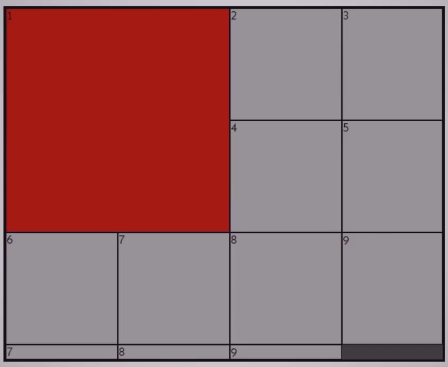Una caractertica de las grillas es que pese a que el espacio ocupado por las celdas se modifique, esto solo afecta a las dimenciones de estas, no significa que la celda absorba a algun item grid, estos elementos simplemete proceden a correrse dando espacio a la celda para ocupar el espacio designado, ya sea desplazandose a otra columna o desendiendo a otra fila.
A su vez tal y com se pude ver en el ejemplo esta propiedad acepta dos valores numericos en los cuales el primero representa la numeración de la linea donde comienza la celda seguida de un "slash (/)"l y continuando con el segundo digito, el cual representa la numeración de la linea donde termina la celda, esto es igual para ambas propiedades.
Es importante no confundir, estos valores numericos no representan el numero de casillas que ocupara la celda, si no en cuales lineas empieza y termina la celda en cuestión, sin embargo axiste una forma de utilizar el número de casillas que se desea utilizar como valor para esta propiedad, esto se logra añadiendo el valor span delante del segundo número, de ese modo este deja de represetnar la numeración de la linea, si no que pasa a representar el numero de seldas a cubrir de la siguente forma:
Codigo
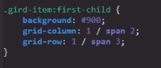Resultado
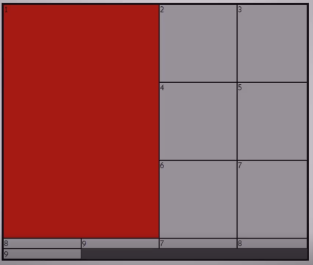De este modo la declaración de este ejmplo deja de ser: "empieza en la lina 1 y termina en la 3" y pasa a ser: "empieza en la lina 1 y cubre 3 casillas". Este metodo que puede simplificar bastante más la implementación de esta propiedad.
Bariantes
Realmente ambas propiedades se tratan de propiedades de abrebiatura, ya que cada una tiene la función de recibir los datos pertienetes a otras dos propiedades de la siguite forma:
-
Grid-column abrebia los datos de:
Grid-column-start: Define la linea de columna (vertical) en la que empieza la celda
Grid-column-end: Define la linea de columna (vertical) en la que termina la celda
-
Grid-row: Abrebia los daots de:
Grid-row-start: Define la linea de fila (horizontal) en la que empieza la celda
Grid-row-end Define la linea de fila (horizontal) en la que temina la celda
Ejemplo
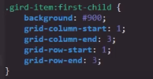Por lo tanto utilizar estas propiedades es más optimo que sus verciones espesificas lo que nos permite definir más datos con menos lineas de codigo.
-